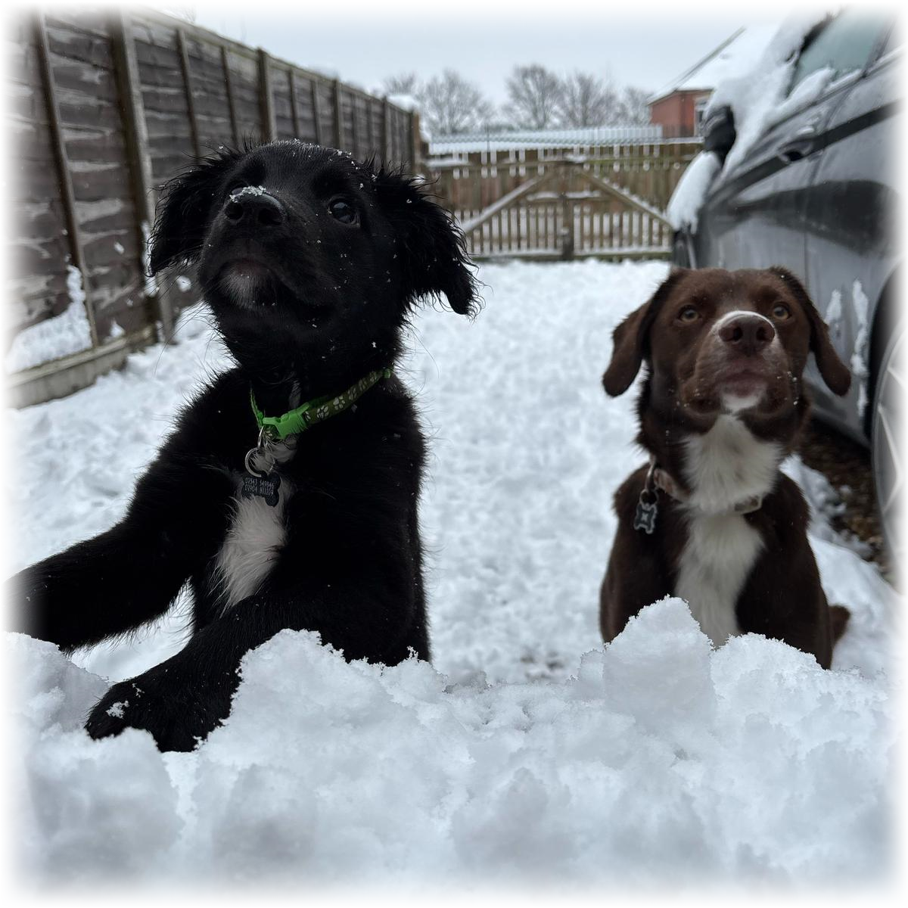

Welcome to My Portfolio
Hi, I'm Nathaniel Waterworth, a C# and Unity Developer passionate about solving technical challenges and building efficient systems.
This portfolio showcases my work in software development, automation, and game technology.
Explore my projects and feel free to reach out!
I enjoy solving complex problems, optimizing systems, and bringing ideas to life through code.
Programming allows me to blend logic, creativity, and engineering to create efficient and scalable solutions.
Whether it's automating workflows, developing interactive applications, or optimizing performance,
I find immense satisfaction in refining and improving systems.
I'm currently focused on C# and Unity development, working on projects that involve software architecture, automation, and interactive systems.
I'm always experimenting with new technologies, refining my skills, and finding better ways to solve technical challenges.
Right now, I'm particularly interested in real-time rendering, workflow automation, and performance optimization.

Outside of development, I enjoy learning new skills, problem-solving challenges, and experimenting with creative projects.
I’m currently learning Japanese, exploring both the language and culture as a personal challenge.
I have two energetic dogs, Watson (Border Collie/Springer Spaniel) and Flynn (Border Collie/Cocker Spaniel), who keep me active and entertained.
When I’m not coding, I like to train at the gym, which helps clear my head and stay physically active.
I also enjoy playing video games, appreciating both the creativity and technical complexity behind them.